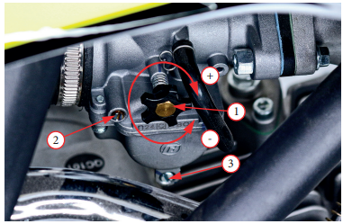

Проверка свободного хода
Рукоятка акселератора
5 должна иметь свободный
ход «А» 3–5 мм. При необходимости отрегулируйте до этого
значения
Для точной регулировки прогрейте двигатель до рабочей температуры, а затем:
- Установите питбайк на ровную горизонтальную поверхность
- Убедитесь, что питбайк находится на нейтральной передаче
- Запустите двигатель
- Если двигатель не прогрет, дайте ему поработать в течение
5–10 минут, перед началом регулировки.
- Отрегулируйте частоту холостого хода с помощью
винта
1 регулировки холостого хода
- Чтобы повысить обфороты, закручивайте в направлении (+)
- Чтобы уменьшить обороты, закручивайте в направлении (–)
- Не регулируйте
винт качества
2. Он выставлен на заводе, и
может быть отрегулирован только дилером.
- Не выкручивайте
сливной винт
поплавковой камеры 3